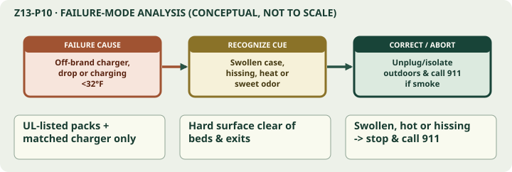

Z13-P10 · Home survival and utilities · New manuscript
Store and charge lithium-ion battery packs safely to prevent thermal fires
Prevent runaway lithium-ion battery fires during household charging, storage, and winter outages.
When it applies · Power banks, portable power stations, e-bike/tool packs, and backup batteries stored inside homes.
Equipment · UL/NRTL-listed batteries and matched manufacturer chargers, hard non-combustible charging surface, and working smoke alarms.

Actions
- Buy and use ONLY independently safety-listed (UL/ETL/NRTL) battery packs and their exact manufacturer-specified chargers—damaged, off-brand, or mismatched chargers cause internal short circuits and violent thermal runaway fires.[U09, U04]
- Charge and store lithium batteries on hard, flat non-combustible surfaces well away from beds, couches, curtains, and primary room exit doors, and keep packs within manufacturer temperature limits (charging frozen lithium batteries below 32°F permanently damages cells and raises fire risk).[U09, U04]
- Stop using any battery pack IMMEDIATELY if it swells, hisses, smells sweet/chemical, overheats, leaks, or was dropped hard or submerged in floodwater; isolate safely outdoors away from structures if safe to move and follow local hazardous-waste disposal rules.[U09, U04]
Failure recognition · Charging a swollen off-brand power bank on a bedroom pillow next to the only doorway overnight.[U09, U04]
Verify · Confirm UL/NRTL listing, matched charger, hard non-combustible surface clear of exits, and zero swelling or overheating.[U09, U04]
Stop or change course · Smoke, hissing, popping, or burning odor from a lithium battery requires immediate household evacuation and calling 911—lithium fires release toxic gases and reignite rapidly.[U09, U04]
Evidence and editorial notes
- U04 · FEMA / Ready.gov · Home Fires (current web edition)
- Section: Home Fires > Smoke Alarms, Fire Extinguishers, and Escape Plans · Conditions: Residential fire prevention during outages and supplemental heating
Support: Test smoke alarms monthly on every level and outside sleeping areas, keep two exits clear from every room, store fuels outside living spaces in approved containers, and evacuate immediately if a fire exceeds incipient containment.
Limitations: Candles and improvised indoor flames dramatically elevate outage house-fire deaths. · Conflicting evidence: None; integrates with CPSC CO-alarm rules (C09).
Editorial note: Anchors outage fire prevention, fuel storage, and exit readiness in Z13. · Specialist reviewer: Fire prevention and residential safety
Primary source · checked 2026-11-24 - U09 · FEMA / Ready.gov · Power Outages (current web edition)
- Section: Battery Backup, Power Stations, and Lithium-Ion Safety · Conditions: Portable battery power stations, UPS units, and rechargeable packs during outages
Support: Use UL/NRTL-listed battery stations within rated wattage limits, charge and store lithium batteries away from combustible bedding/exits, stop using swollen or overheated packs, and account for cold-weather battery capacity loss.
Limitations: Portable battery banks cannot safely power high-draw electric resistance heaters or hardwired furnaces without approved transfer equipment. · Conflicting evidence: None; separates clean indoor battery backup from fuel-combustion hazards.
Editorial note: Grounds portable power sizing, inverter limits, and battery fire safety. · Specialist reviewer: Electrical safety and fire prevention
Primary source · checked 2026-11-24
Source lineage · FEMA Ready.gov Power Outages and Home Fires; new manuscript · Classification · New manuscript.